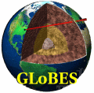

|  | |
| Home | |
| Features | |
| Download | |
| Experiments | |
| Credits | |
| Contact | |
| Impressum | |
GLoBES Features and Examples
GLoBES is a modular software system to simulate long-baseline neutrino oscillation experiments.- Experiments are defined with the Abstract Experiment Definition Language (AEDL) . Pre-defined AEDL-files are available for a number of experiments. The parameters can be modified easily by changing the AEDL files.
- The GLoBES Library contains a variety of functions which allow to simulate various experiments on an event rate basis and to investigate their capabilities.
- Different analysis tools are provided.
New features in version 3.0:
- Customizable treatment of systematical errors
- User-defined priors to incorporate arbitrary external information on the oscillation parameters
- An interface for the implementation of non-standard physics
- Beta-beam fluxes are now built-in
- New and updated AEDL files
- Various bug fixes
- Improved performance
Abstract Experiment Definition Language (AEDL) features:
- Structured Channel->Rule->Experiment building block concept (see manual)
- Multiple energy resolution functions
- Different energy smearing algorithms
- Arbitrary efficiencies
- Definition of energy cuts, bin sizes and numbers etc.
- Various systematics parameters, such as normalization and energy calibration errors
- Different systematics modes, such as total rate or spectral analysis
- Arbitrary matter density profiles
- Arbitrary fluxes and cross sections; built-in neutrino factory and beta beam fluxes
- Any number of signal-background-combinations and oscillation channels within one experiment
- ...
GLoBES library features:
- Single and multiple experiment simulation (up to 32 experiments simultaneously)
- Low-level information: event rate vectors, oscillation probabilities etc.
- Simple Chi^2 for individual experiments and experiment combinations
- Inclusion systematical errors in Chi^2
- Chi^2-Cuts through the n-dimensional fit manifold
Example for cut through manifold in theta13-deltacp-plane (including systematics): - Projection of two- and multi-parameter correlations.
Example for projection of two-parameter correlation: - Projection of full n-parameter correlation by n-dimensional minimizer.
- Chi^2-Projections onto theta13- or deltacp-axis, and any other axis.
Example for projection (onto theta13-axis) of the full n-parameter correlation (thick curve) compared to the projection of the theta13-deltacp-correlation only (thin curve): - Chi^2-Projections onto theta13-deltacp-plane, and any other plane
(Equivalent to first figure, but as projection of the fit manifold and not as cut) - Projection of the n-dimensional fit-manifold onto any k-dimensional hyperplane (1<=k<n)
- Numerical location of degeneracies
- Projections and cuts of degenerate solutions.
Example for cut in theta13-deltacp-plane for original (black curve) and degenerate (gray curve) solution: - Simulation of matter density uncertainties
- Run-time modification of experiment parameters: baseline, target mass, matter density profile etc.
- New in GLoBES 3.0: Inclusion of arbitrary external input on the oscillation parameters through the concept of user-defined priors
-
New in GLoBES 3.0:
User-defined treatment of systematical errors
Example: Sensitivity of a reactor experiment with near and far detectors -
New in GLoBES 3.0:
Interface for the implementation of non-standard physics
Example: Sensitivity of a reactor experiments to wave package decoherence effects - ...
GLoBES software package features
- User's interface (C library) for Linux
- Detailed User's and AEDL manual
- Many examples for immediate compilation
- AEDL prototype files for conventional beams, superbeams, neutrino factories, beta beams, reactor experiments
- A standalone program to test and debug AEDL files
- Utilities
(All figures are taken from the GLoBES User's manual)